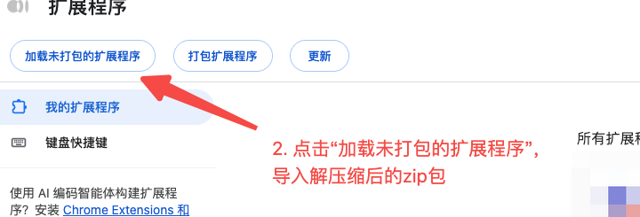
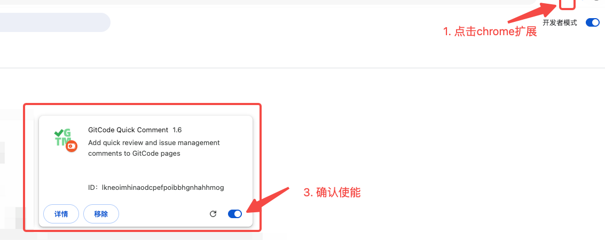

GitCode Quick Comment
GitCode Quick Comment离线安装
适合内网或无法访问应用商店的环境。先下载离线包，再加载解压后的文件夹。
下载 gitcode-quick-comment-v1.9.zip
-
1
解压离线包
把 zip 解压到一个固定目录，例如
~/extensions/gitcode-quick-comment。解压后目录里应能直接看到manifest.json，不要再套一层多余文件夹。 -
2
开启开发者模式并加载
打开
chrome://extensions/（Edge 为edge://extensions/），打开右上角「开发者模式」，点击「加载未打包的扩展程序」，选择解压出的文件夹。
开发者模式 → 加载未打包的扩展程序。 -
3
确认启用
扩展卡片显示「GitCode Quick Comment 1.9」且开关已开启即安装成功。点击工具栏上的插件图标可以打开设置面板。

确认扩展已启用。
更新离线包：用新版本文件覆盖解压目录，回到扩展管理页点击卡片上的刷新按钮。
Firefox：只能在 about:debugging 中临时载入 manifest.json，浏览器重启后失效，不建议长期使用。